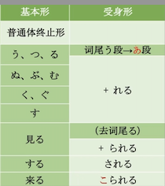

によって

１李さんは部長に褒（ほ）められました。
褒められる — 褒められる ー 褒められます
ー 褒められない
ー 褒められた
直接受身 を・に格的动词
部長は李さんに褒めました。
森さんは 小野さんに 食事に 誘（さそ）われました
小野さんは 森さんを 食事に 誘いました
部長は李さんに話しかけました
李さんは部長に話しかけられました
李さんは友達に助（たす）けられました。（客观陈述）
李さんは友達に助けてもれいました。 （受惠）
２馬さんは森さんにカメラを壊されました。 ー待ち主受身
森さんは馬さんのカメラを壊しました。
李さんは 犬に 手を 噛（か）まれました。
犬は 李さんの手を 噛みました。
３陳さんは飼（か）っていた小鳥に逃（に）げられました。 ー受害，间接被动
间接被动，主语受害的心情 迷惑受身 めいわくうけみ
友達に来られた 被朋友来 ，影响了我
森さんは小野さんと結婚した
森さんに小野さんと結婚された 我被森和小野结婚了，是一种受害者身份
４2010年に上海で万博（ばんぱく）が開かれました。 —直接受身，物品做主语
2010年の万博は上海で開かれました。
駅前に高いビルが建てられました。
基本课文
A：太田君、どうしたんだ。元気がないね。
B：ええ。部長に叱（しか）られたんです。
A：李さん、どうしたんですか。
B：昨日犬に手を噛まれたんです。
A：週末にキャンプに行きました。
B：へえ。楽しかったですか。
あ：二日（ふつか）とも雨に降られて、大変でしたよ。
によって 创造发明：作る、設計する、建てる、発明する、書く……
A：この車のデザインはとてもいいですね。
B：ええ。日本の有名なデザイナーによって設計（せっけい）されました。
この本は山田先生によって書かれました。
山田先生は 娘（むすめ）に この本を 書きました。
この本は 山田先生によって 娘に 書かれました。
から 渡す、送る、贈る
林先生は太郎に金メダルを渡しました。
金メダルが 林先生から 太郎に 渡されました。
林先生から 太郎に 金メダルが 渡されました。
应用课文
市場調査 しじょうちょうさ
李：あっ、森さん、お疲れ様でした。遅かったですね。
森：いやあ、参（まい）りましたよ。タクシーで帰ってきたんですが、渋滞に巻（ま）き込まれて。北京の交通事情は大変ですね。
李：ええ、そうなんです。私は毎日、パスの中で足を踏（ふ）まれていますよ。
李：森さん、支社長に呼（よ）ばれて何か言われたんですか。
森：ええ。CS公司から依頼（いらい）された調査のレポートが遅いって、しかられました。
「 CS公司」調査報告書（ちょうさほうこくしょ）
森・健太郎
昨（さく）年発売（はつばい）された清涼飲料水 （せいりょういんりょうすい） は五種類（しゅるい）あり、最（もっと）も売れているのは、中国のA社によって開発された「爽快」である。定価（ていか）が最も安く、子供からお年寄りまで、幅（はば）広い世代に人気がある。一昨年、A社と日本のB社によって北京に合弁（ごうべん）会社が作られ、「爽快」は昨年から大量に製造（せいぞう）されるようになった。
製造から出荷（しゅっか）に至（いた）るまですべてコンビューターで管理され、大幅（おおはば）なコストダウンが図（はか）られているため、低価格（ていかかく）が実現（じつげん）できたと考えられる。
清涼飲料水の市場は今後（こんご）も成長（せいちょう）が見込まれるが、新しい商品に求（もと）められるのは、魅力（みりょく）あるネーミングと洗練（せんれん）されたデザインである。
原文
昨年発売された清涼飲料水は五種類あり、最も売れているのは、中国のA社によって開発された「爽快」である。定価が最も安く、子供からお年寄りまで、幅広い世代に人気がある。一昨年、A社と日本のB社によって北京に合弁社が作られ、「爽快」は昨年から大量に製造されるようになった。
製造から出荷に至るまですべてコンビューターで管理され、大幅なコストダウンが図られているため、低価格が実現できたと考えられる。
清涼飲料水の市場は今後も成長が見込まれるが、新しい商品に求られるのは、魅力あるネーミングと洗練されたデザインである。
知识点：
〜と思われている 〜と考えられている 共同认知的
けど、けれど、けれどもーー＞が
新しい商品に ネーミングとデザインを 求める。
新しい商品に ネーミングとデザインが 求められる。
新しい商品に求められるのは ネーミングとデザインである。
翻译
去年发布的清凉饮料有五种类型。最畅销的，是中国A公司开发的【爽快】饮料。价格最便宜，从小孩到老人，深受各年龄段喜欢。前年，A公司和日本B公司合作，【爽快】在去年被大量制造。
从制造到出货全部使用电脑管理，成本被大幅的图求降低，可以认为低价格因此被实现。
清凉饮料的市场今后将增长，新产品需要有吸引力的名字和精致的设计。
ですます体转换
去年発売された清涼飲料水は五種類あって、最も売れているのは、中国のA社によって開発された「爽快」です。
一昨年、A社と日本のB社によって北京に合弁会社が作られ、「爽快」は昨年から大量に製造されるようになった。
製造から出荷に至るまで滑んてコンビューターで管理され、大幅なコストダウンが図られているため、低価格が実現なできたとオカンが得られる。
清涼飲料水の市場は今後も成長が見込まれるが、新しい商品に求められるのは、魅力あるネーミングと洗練されたデザインであります。